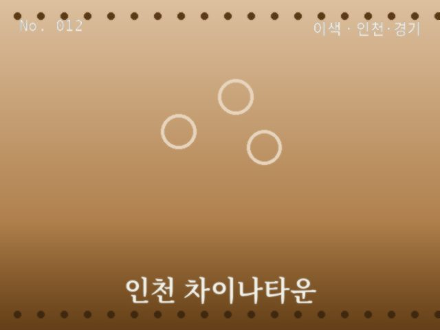
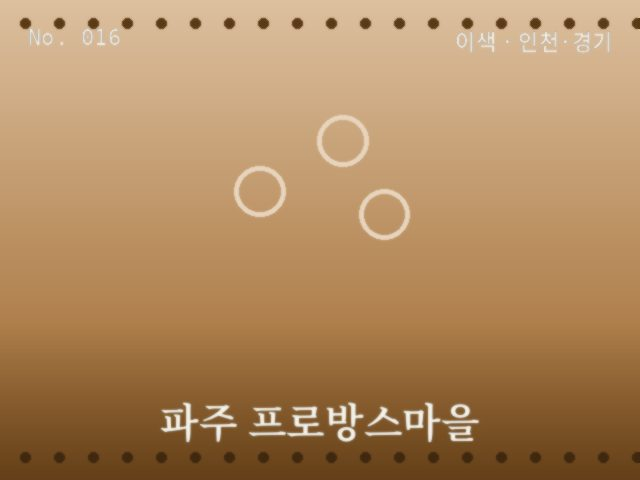
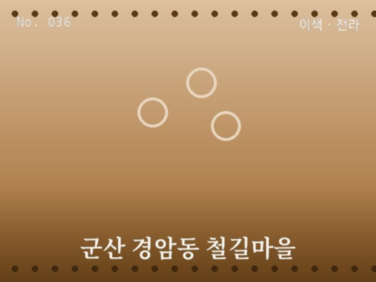
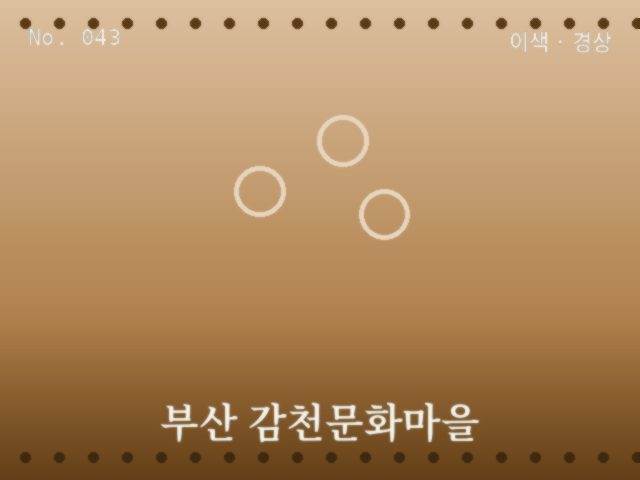
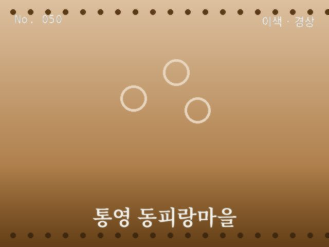
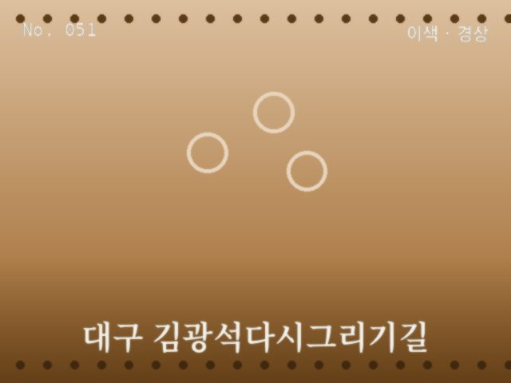

이색
서울
이화동 벽화마을
계단마다 그림이 있는 골목

이색
서울
익선동 한옥거리
좁은 골목 속 레트로 감성 카페거리

이색
인천·경기
인천 차이나타운
붉은 등과 패루가 이어지는 이국적인 거리

이색
인천·경기
파주 프로방스마을
파스텔톤 건물이 늘어선 테마 마을

이색
강원
강릉 안목해변 커피거리
해변을 따라 늘어선 통유리 카페

이색
충청
청주 수암골
드라마 촬영지로 알려진 언덕 마을

이색
전라
군산 경암동 철길마을
집 앞으로 기찻길이 지나는 마을

이색
경상
부산 감천문화마을
계단식으로 쌓아 올린 컬러풀한 집들

이색
경상
통영 동피랑마을
바다가 내려다보이는 벽화 언덕

이색
경상
대구 김광석다시그리기길
벽화와 노랫말이 있는 골목길

이색
제주
제주 애월 카페거리
해안도로를 따라 늘어선 카페

이색
제주
제주 도두동 무지개해안도로
알록달록한 방파제와 비행기 배경